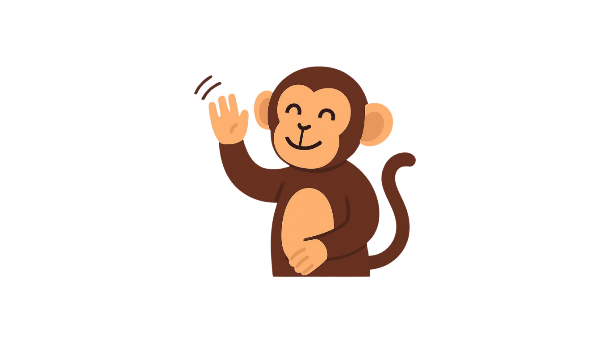

<section class="footer-farewell">
    <div class="farewell-content">
        
        <h2>Oye… antes de irte</h2>
        <p>Recuerda respirar, descansar y no exigirte tanto.</p>
        <p class="final-line">Aquí estaré cuando necesites un momento para ti.</p>
        
        <button class="btn-close-final" onclick="window.location.href='index.html'">Volver al inicio</button>
    </div>
</section>
    
